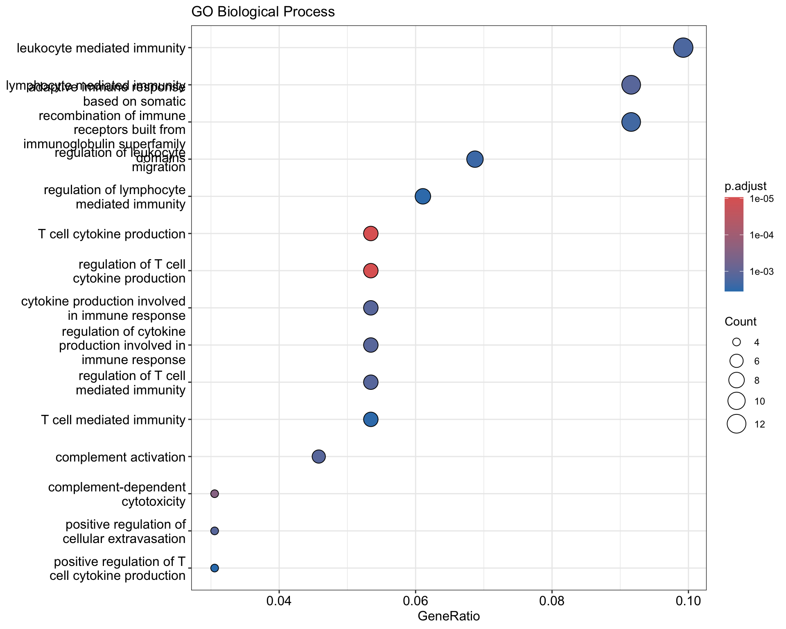
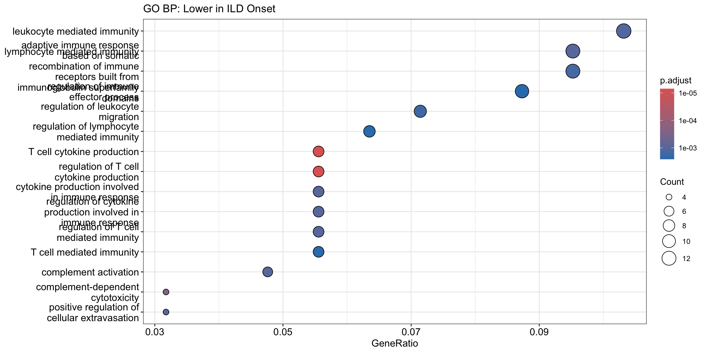
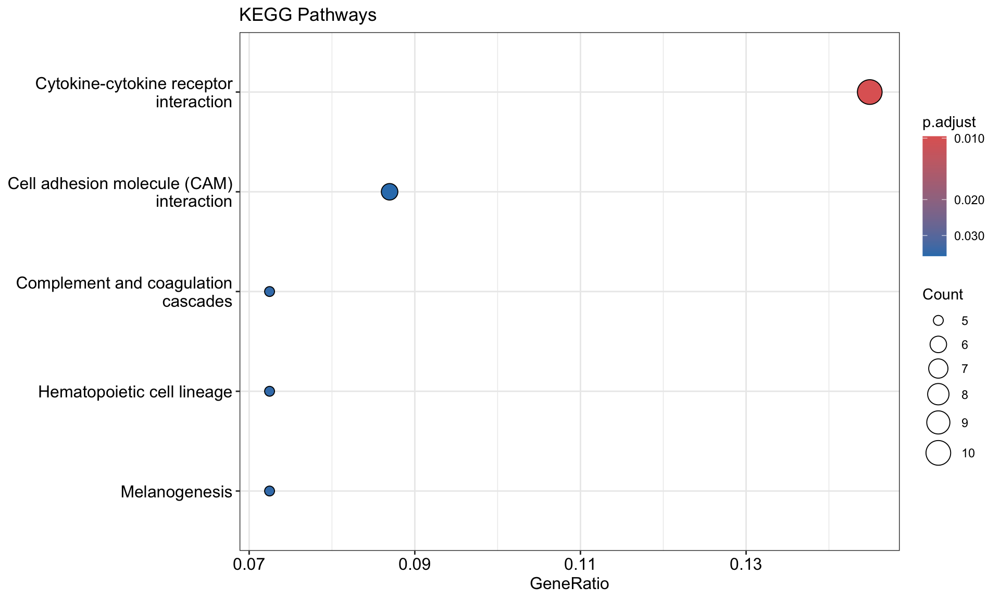
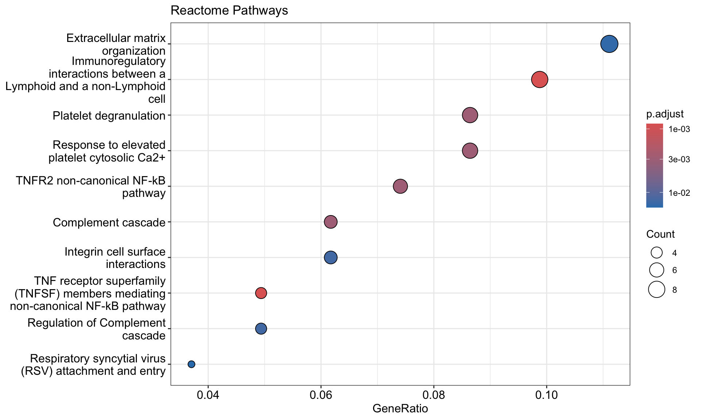
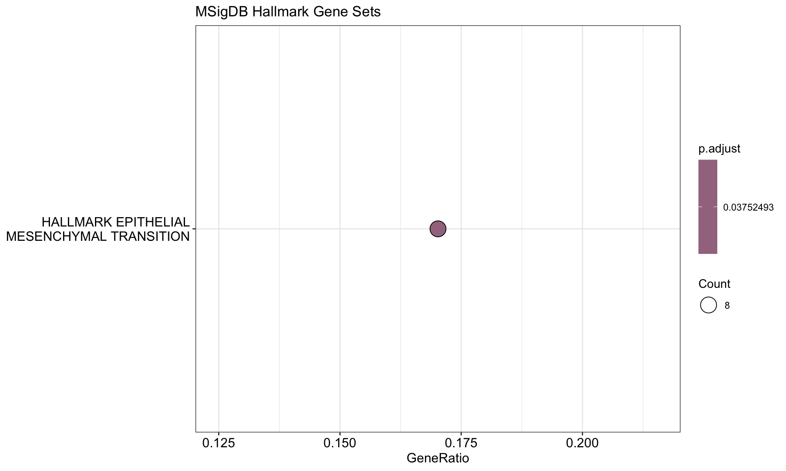
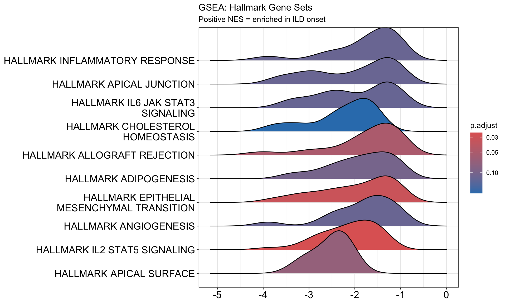

Last updated: 2026-07-10
Checks: 7 0
Knit directory: RESOLVE_SerumProteomics/
This reproducible R Markdown analysis was created with workflowr (version 1.7.2). The Checks tab describes the reproducibility checks that were applied when the results were created. The Past versions tab lists the development history.
Great! Since the R Markdown file has been committed to the Git repository, you know the exact version of the code that produced these results.
Great job! The global environment was empty. Objects defined in the global environment can affect the analysis in your R Markdown file in unknown ways. For reproduciblity it’s best to always run the code in an empty environment.
The command set.seed(20250204) was run prior to running
the code in the R Markdown file. Setting a seed ensures that any results
that rely on randomness, e.g. subsampling or permutations, are
reproducible.
Great job! Recording the operating system, R version, and package versions is critical for reproducibility.
Nice! There were no cached chunks for this analysis, so you can be confident that you successfully produced the results during this run.
Great job! Using relative paths to the files within your workflowr project makes it easier to run your code on other machines.
Great! You are using Git for version control. Tracking code development and connecting the code version to the results is critical for reproducibility.
The results in this page were generated with repository version 4077a53. See the Past versions tab to see a history of the changes made to the R Markdown and HTML files.
Note that you need to be careful to ensure that all relevant files for
the analysis have been committed to Git prior to generating the results
(you can use wflow_publish or
wflow_git_commit). workflowr only checks the R Markdown
file, but you know if there are other scripts or data files that it
depends on. Below is the status of the Git repository when the results
were generated:
Ignored files:
Ignored: .DS_Store
Ignored: .Rhistory
Ignored: .Rproj.user/
Ignored: Screenshot-2024-08-22-at-11.31.50_files/
Ignored: analysis/.DS_Store
Ignored: data/.DS_Store
Ignored: output/.DS_Store
Ignored: output/3.1_veSSc_Athritis /
Ignored: output/3.2_veSScarthritis_vs_SScarthritis /
Ignored: output/3.2_veSScarthritis_vs_SScarthritis/
Ignored: output/Analysis_Cosimo/
Untracked files:
Untracked: MRSS_delta_correlations.png
Untracked: analysis/OLD/
Untracked: analysis/output/
Untracked: code/11102024_PreliminaryLook_Preprocessing.Rmd
Untracked: code/14102024_MetaData.csv
Untracked: code/Final_FinalList_ArthritisControls_2024.08.15.xlsx
Untracked: data/ASTRID_ILDonset_PROTEOMIC_CB3groups.xlsx
Untracked: data/ASTRID_ILDonset_PROTEOMIC_COSIMO.xlsx
Untracked: data/Metadata_veSSC.xlsx
Untracked: data/Metadata_veSSC_vs_SSc_arthritis_final.xlsx
Untracked: data/P2024-199-OLI_80_NPX_2024-10-10.parquet
Untracked: data/PEA/
Untracked: data/PRECISE_Pietro.xlsx
Untracked: data/metadata.xlsx
Untracked: output/AnalysisD_PathwayEnrichment/
Untracked: output/ILD_Onset_Analysis/
Untracked: output/Pietro_InterferonScore/
Untracked: output/PreSScArthritis_vs_SScArthritis/
Untracked: output/PreSSc_Synovitis/
Untracked: output/SSc_Skin_Regression_Analysis/
Untracked: output/SSc_veSSc_vs_SSc_Arthritis_Analysis_Clean/
Untracked: output/UpdatedAnalysisPipelineCosimo/
Untracked: output/arthritis_analysis/
Untracked: site_libs/
Unstaged changes:
Modified: .Rprofile
Modified: .gitattributes
Modified: .gitignore
Modified: README.md
Modified: RESOLVE_SerumProteomics.Rproj
Modified: _workflowr.yml
Deleted: analysis/PreSSc/PreSScArthritis_vs_SScArthritis.Rmd
Deleted: analysis/SSc_Skin_Regression_Analysis.Rmd
Modified: analysis/about.Rmd
Modified: analysis/license.Rmd
Modified: code/README.md
Modified: data/README.md
Modified: output/README.md
Note that any generated files, e.g. HTML, png, CSS, etc., are not included in this status report because it is ok for generated content to have uncommitted changes.
These are the previous versions of the repository in which changes were
made to the R Markdown
(analysis/SSc_ILD_Onset_Pathway_Enrichment.Rmd) and HTML
(docs/SSc_ILD_Onset_Pathway_Enrichment.html) files. If
you’ve configured a remote Git repository (see
?wflow_git_remote), click on the hyperlinks in the table
below to view the files as they were in that past version.
| File | Version | Author | Date | Message |
|---|---|---|---|---|
| Rmd | 4077a53 | astridhofman7 | 2026-07-10 | Update index and analyses |
Pathway enrichment analysis on protein hits from the ILD Onset vs No ILD Onset binary analysis.
Hit selection: - Filter for AveExpr > 0 (reliably detected proteins) - Recalculate FDR on filtered set - Apply FDR < 0.2 threshold
Enrichment approaches: 1. All hits — combined analysis 2. Up in ILD onset — proteins higher in patients who develop ILD 3. Down in ILD onset — proteins lower in patients who develop ILD
# =============================================================================
# REQUIRED PACKAGES
# Install if needed:
# BiocManager::install(c("clusterProfiler", "org.Hs.eg.db", "enrichplot", "ReactomePA"))
# install.packages("msigdbr")
# =============================================================================
library(dplyr)
library(ggplot2)
library(tidyr)
# Enrichment analysis
library(clusterProfiler) # GO, KEGG enrichment
library(org.Hs.eg.db) # Human gene annotation
library(enrichplot) # Visualization
library(ReactomePA) # Reactome pathway analysis
# Gene sets
library(msigdbr) # MSigDB gene sets (Hallmark, etc.)# =============================================================================
# PURPOSE: Load results from the ILD onset binary analysis
#
# This should be the output from your main analysis script
# (results_ILDonset_vs_NoILDonset_all.csv)
# =============================================================================
# Load the binary comparison results
results <- read.csv(here::here("output", "ILD_Onset_Analysis", "results_ILDonset_vs_NoILDonset_all.csv"))
cat("Loaded", nrow(results), "proteins\n")Loaded 3611 proteinshead(results) OlinkID logFC AveExpr t P.Value adj.P.Val B
1 OID44222 -2.831862 1.0195417 -6.073276 2.615703e-05 0.09445303 2.4352551
2 OID43477 -1.734716 1.6302091 -5.369728 9.180023e-05 0.13484984 1.4253560
3 OID44280 -2.016844 0.3378656 -4.780493 2.763735e-04 0.13484984 0.5136233
4 OID44712 -2.142294 0.8916622 -4.742688 2.970603e-04 0.13484984 0.4532074
5 OID45474 -4.036961 0.1425408 -4.644629 3.585009e-04 0.13484984 0.2954902
6 OID45093 -1.836528 0.3825514 -4.631442 3.677112e-04 0.13484984 0.2741699
Assay
1 SEL1L
2 CCN4
3 SPRR3
4 IGSF8
5 LGALS3BP
6 CST6# =============================================================================
# PURPOSE: Define significant proteins
#
# STRATEGY:
# 1. Filter for reliably detected proteins (AveExpr > 0)
# 2. Recalculate FDR on filtered set (valid because AveExpr is independent)
# 3. Apply FDR < 0.2 threshold
#
# WHY RECALCULATE FDR:
# - Original adj.P.Val was calculated on ALL proteins
# - After filtering, fewer tests → less harsh correction → better power
# =============================================================================
# Filter and recalculate FDR
hits_fdr <- results %>%
filter(AveExpr > 0) %>%
mutate(adj.P.Val = p.adjust(P.Value, method = "BH")) %>%
filter(adj.P.Val < 0.2) %>%
arrange(P.Value)
cat("=== FDR < 0.2 (after AveExpr > 0 filter) ===\n")=== FDR < 0.2 (after AveExpr > 0 filter) ===cat("N proteins:", nrow(hits_fdr), "\n")N proteins: 142 if(nrow(hits_fdr) > 0) {
cat("Proteins:", paste(hits_fdr$Assay, collapse = ", "), "\n")
}Proteins: SEL1L, CCN4, SPRR3, IGSF8, LGALS3BP, CST6, KIRREL2, XG, SLURP1, RBP5, CD5L, PALM, IGLC2, EPB41L3, MYDGF, B2M, ATRN, SHISA5, LY6D, VSIG2, MMP13, ATRAID, PTGDS, APOD, GM2A, CCER2, CD300E, TYRP1, DIAPH3, CD40, TNFRSF11A, KLRF1, AGRN, SERPINA3, NECAB1, CD55, SPP1, TAFA5, JTB, SCARB2, SERPINA4, BAMBI, NECAB2, SCRG1, GPR158, JAM3, MAGEA4, RELT, IL4, BTD, CALB1, GUCA2A, CLU, EFNA4, PIK3IP1, MSR1, IGFBP4, TNFRSF19, CD59, CD99, LUZP2, KCNIP3, FAM3C, SCARA5, LRTM1, TMPRSS11D, MOG, RNASE6, C1S, CLGN, CEACAM19, ATRX, NECTIN4, TNFRSF1A, EPB41L2, TTC24, C2orf68, PRRT3, KIAA0232, CD300LF, NPPC, DSG3, ENDOU, CLC, LGALS4, CGREF1, TNFRSF14, STAG1, VEGFB, CCN3, KLK11, SNX33, CD38, RNF149, ADAM12, SEZ6, SNCG, ADAM22, ERP27, SUMO1, PALM2, RNASE1, BTN2A1, CALML4, IL17C, PTK7, SCGB1A1, CFD, IGF1R, LTBR, TCL1B, CREB3L1, MAGEC2, SLITRK1, MYO10, RNASE10, DBI, NUCB2, PYDC1, WNT9A, FZD8, HABP2, THY1, NPDC1, TNFRSF12A, VMO1, CDH3, WBP2NL, PTPRN2, PTPRN, CCDC80, CD7, PCOLCE, TTR, QRICH2, TMSB10, PRG3, JAM2, OGN, HSPG2, LILRB4, CYTL1 # =============================================================================
# PURPOSE: Separate up- and down-regulated proteins
#
# WHY: Proteins higher vs lower in ILD onset may reflect different biology
#
# INTERPRETATION (from binary analysis):
# - Positive logFC: Higher in ILD onset patients
# - Negative logFC: Lower in ILD onset patients (higher in controls)
# =============================================================================
hits_up <- hits_fdr %>% filter(logFC > 0)
hits_down <- hits_fdr %>% filter(logFC < 0)
cat("=== Direction of Change (FDR < 0.2) ===\n\n")=== Direction of Change (FDR < 0.2) ===cat("Higher in ILD onset (positive logFC):", nrow(hits_up), "\n")Higher in ILD onset (positive logFC): 8 if(nrow(hits_up) > 0) cat(" ", paste(hits_up$Assay, collapse = ", "), "\n\n") DIAPH3, KCNIP3, LRTM1, TTC24, KIAA0232, TCL1B, MAGEC2, WBP2NL cat("Lower in ILD onset (negative logFC):", nrow(hits_down), "\n")Lower in ILD onset (negative logFC): 134 if(nrow(hits_down) > 0) cat(" ", paste(hits_down$Assay, collapse = ", "), "\n") SEL1L, CCN4, SPRR3, IGSF8, LGALS3BP, CST6, KIRREL2, XG, SLURP1, RBP5, CD5L, PALM, IGLC2, EPB41L3, MYDGF, B2M, ATRN, SHISA5, LY6D, VSIG2, MMP13, ATRAID, PTGDS, APOD, GM2A, CCER2, CD300E, TYRP1, CD40, TNFRSF11A, KLRF1, AGRN, SERPINA3, NECAB1, CD55, SPP1, TAFA5, JTB, SCARB2, SERPINA4, BAMBI, NECAB2, SCRG1, GPR158, JAM3, MAGEA4, RELT, IL4, BTD, CALB1, GUCA2A, CLU, EFNA4, PIK3IP1, MSR1, IGFBP4, TNFRSF19, CD59, CD99, LUZP2, FAM3C, SCARA5, TMPRSS11D, MOG, RNASE6, C1S, CLGN, CEACAM19, ATRX, NECTIN4, TNFRSF1A, EPB41L2, C2orf68, PRRT3, CD300LF, NPPC, DSG3, ENDOU, CLC, LGALS4, CGREF1, TNFRSF14, STAG1, VEGFB, CCN3, KLK11, SNX33, CD38, RNF149, ADAM12, SEZ6, SNCG, ADAM22, ERP27, SUMO1, PALM2, RNASE1, BTN2A1, CALML4, IL17C, PTK7, SCGB1A1, CFD, IGF1R, LTBR, CREB3L1, SLITRK1, MYO10, RNASE10, DBI, NUCB2, PYDC1, WNT9A, FZD8, HABP2, THY1, NPDC1, TNFRSF12A, VMO1, CDH3, PTPRN2, PTPRN, CCDC80, CD7, PCOLCE, TTR, QRICH2, TMSB10, PRG3, JAM2, OGN, HSPG2, LILRB4, CYTL1 # =============================================================================
# PURPOSE: Convert gene symbols to Entrez IDs
#
# WHY: clusterProfiler and most pathway databases use Entrez IDs
# Gene symbols (like "MMP1") must be converted
#
# NOTE: Some genes may not map — this is normal (pseudogenes, novel genes)
# =============================================================================
if(nrow(hits_fdr) >= 3) {
gene_symbols <- hits_fdr$Assay
entrez_ids <- bitr(gene_symbols,
fromType = "SYMBOL",
toType = "ENTREZID",
OrgDb = org.Hs.eg.db)
cat("Mapped", nrow(entrez_ids), "of", length(gene_symbols), "genes to Entrez IDs\n")
# Check which genes failed to map
unmapped <- setdiff(gene_symbols, entrez_ids$SYMBOL)
if (length(unmapped) > 0) {
cat("Unmapped genes:", paste(unmapped, collapse = ", "), "\n")
}
# Also map direction-specific lists
if(nrow(hits_up) >= 2) {
entrez_up <- bitr(hits_up$Assay, fromType = "SYMBOL", toType = "ENTREZID", OrgDb = org.Hs.eg.db)
cat("\nMapped UP genes:", nrow(entrez_up), "\n")
}
if(nrow(hits_down) >= 2) {
entrez_down <- bitr(hits_down$Assay, fromType = "SYMBOL", toType = "ENTREZID", OrgDb = org.Hs.eg.db)
cat("Mapped DOWN genes:", nrow(entrez_down), "\n")
}
} else {
cat("Too few hits for gene ID conversion (need at least 3)\n")
}Mapped 141 of 142 genes to Entrez IDs
Unmapped genes: PALM2
Mapped UP genes: 8 Mapped DOWN genes: 133 # Create mapping for all results (for GSEA later)
results_detected <- results %>% filter(AveExpr > 0)
all_entrez <- bitr(results_detected$Assay,
fromType = "SYMBOL",
toType = "ENTREZID",
OrgDb = org.Hs.eg.db)
cat("\nTotal mapped for GSEA:", nrow(all_entrez), "of", nrow(results_detected), "\n")
Total mapped for GSEA: 3551 of 3611 # =============================================================================
# PURPOSE: Gene Ontology enrichment analysis
#
# THREE ONTOLOGIES:
# - BP (Biological Process): What the proteins do together
# - MF (Molecular Function): Biochemical activities
# - CC (Cellular Component): Where proteins localize
#
# METHOD: Over-representation analysis (ORA)
# Tests if hit genes are enriched in GO terms vs background
# =============================================================================
if(exists("entrez_ids") && nrow(entrez_ids) >= 3) {
# GO Biological Process
go_bp <- enrichGO(gene = entrez_ids$ENTREZID,
OrgDb = org.Hs.eg.db,
ont = "BP",
pAdjustMethod = "BH",
pvalueCutoff = 0.05,
qvalueCutoff = 0.2,
readable = TRUE)
cat("=== GO Biological Process ===\n")
if (!is.null(go_bp) && nrow(go_bp) > 0) {
cat("Significant terms:", nrow(go_bp), "\n")
print(head(go_bp@result[, c("Description", "GeneRatio", "pvalue", "p.adjust", "geneID")], 10))
} else {
cat("No significant terms found\n")
}
} else {
cat("Too few mapped genes for GO enrichment\n")
go_bp <- NULL
}=== GO Biological Process ===
Significant terms: 63
Description
GO:0002369 T cell cytokine production
GO:0002724 regulation of T cell cytokine production
GO:0097278 complement-dependent cytotoxicity
GO:0002693 positive regulation of cellular extravasation
GO:0002449 lymphocyte mediated immunity
GO:0002367 cytokine production involved in immune response
GO:0002718 regulation of cytokine production involved in immune response
GO:0006956 complement activation
GO:0002709 regulation of T cell mediated immunity
GO:0002443 leukocyte mediated immunity
GeneRatio pvalue p.adjust
GO:0002369 7/131 1.029168e-08 9.334554e-06
GO:0002724 7/131 1.029168e-08 9.334554e-06
GO:0097278 4/131 4.537102e-07 2.743434e-04
GO:0002693 4/131 2.870555e-06 1.234957e-03
GO:0002449 12/131 4.425304e-06 1.234957e-03
GO:0002367 7/131 4.765546e-06 1.234957e-03
GO:0002718 7/131 4.765546e-06 1.234957e-03
GO:0006956 6/131 5.941573e-06 1.260652e-03
GO:0002709 7/131 6.254612e-06 1.260652e-03
GO:0002443 13/131 9.386055e-06 1.702630e-03
geneID
GO:0002369 CD7/CLC/TNFRSF14/LILRB4/B2M/CD55/IL4
GO:0002724 CD7/CLC/TNFRSF14/LILRB4/B2M/CD55/IL4
GO:0097278 CD59/CD55/IL4/CLU
GO:0002693 XG/THY1/JAM3/CD99
GO:0002449 NECTIN4/CD7/C1S/CLC/TNFRSF14/CD40/LILRB4/B2M/CD55/IGLC2/IL4/CLU
GO:0002367 CD7/CLC/TNFRSF14/LILRB4/B2M/CD55/IL4
GO:0002718 CD7/CLC/TNFRSF14/LILRB4/B2M/CD55/IL4
GO:0006956 C1S/CD5L/CD59/CD55/CFD/CLU
GO:0002709 CD7/CLC/TNFRSF14/LILRB4/B2M/CD55/IL4
GO:0002443 NECTIN4/CD7/C1S/CLC/TNFRSF14/PTGDS/CD40/LILRB4/B2M/CD55/IGLC2/IL4/CLUif(exists("entrez_ids") && nrow(entrez_ids) >= 3) {
# GO Molecular Function
go_mf <- enrichGO(gene = entrez_ids$ENTREZID,
OrgDb = org.Hs.eg.db,
ont = "MF",
pAdjustMethod = "BH",
pvalueCutoff = 0.05,
qvalueCutoff = 0.2,
readable = TRUE)
cat("\n=== GO Molecular Function ===\n")
if (!is.null(go_mf) && nrow(go_mf) > 0) {
cat("Significant terms:", nrow(go_mf), "\n")
print(head(go_mf@result[, c("Description", "GeneRatio", "pvalue", "p.adjust")], 10))
} else {
cat("No significant terms found\n")
}
# GO Cellular Component
go_cc <- enrichGO(gene = entrez_ids$ENTREZID,
OrgDb = org.Hs.eg.db,
ont = "CC",
pAdjustMethod = "BH",
pvalueCutoff = 0.05,
qvalueCutoff = 0.2,
readable = TRUE)
cat("\n=== GO Cellular Component ===\n")
if (!is.null(go_cc) && nrow(go_cc) > 0) {
cat("Significant terms:", nrow(go_cc), "\n")
print(head(go_cc@result[, c("Description", "GeneRatio", "pvalue", "p.adjust")], 10))
} else {
cat("No significant terms found\n")
}
} else {
go_mf <- NULL
go_cc <- NULL
}
=== GO Molecular Function ===
Significant terms: 17
Description
GO:0005031 tumor necrosis factor receptor activity
GO:0005035 death receptor activity
GO:0005044 scavenger receptor activity
GO:0005178 integrin binding
GO:0038024 cargo receptor activity
GO:0001618 virus receptor activity
GO:0140272 exogenous protein binding
GO:0030021 extracellular matrix structural constituent conferring compression resistance
GO:0008236 serine-type peptidase activity
GO:0017171 serine hydrolase activity
GeneRatio pvalue p.adjust
GO:0005031 4/134 5.113433e-07 0.0001283472
GO:0005035 4/134 1.712157e-06 0.0002148757
GO:0005044 5/134 3.017086e-06 0.0002524296
GO:0005178 8/134 1.322106e-05 0.0008296217
GO:0038024 5/134 1.897206e-04 0.0095239729
GO:0001618 5/134 3.248199e-04 0.0123137981
GO:0140272 5/134 3.434127e-04 0.0123137981
GO:0030021 3/134 5.010016e-04 0.0153231904
GO:0008236 7/134 5.494371e-04 0.0153231904
GO:0017171 7/134 6.564056e-04 0.0164757806
=== GO Cellular Component ===
Significant terms: 9
Description GeneRatio pvalue p.adjust
GO:0034774 secretory granule lumen 11/137 1.662932e-05 0.001422453
GO:0060205 cytoplasmic vesicle lumen 11/137 1.912819e-05 0.001422453
GO:0031983 vesicle lumen 11/137 1.966525e-05 0.001422453
GO:0031089 platelet dense granule lumen 3/137 1.086374e-04 0.005893581
GO:0005775 vacuolar lumen 7/137 2.465132e-04 0.010698674
GO:0042827 platelet dense granule 3/137 3.832314e-04 0.013860202
GO:0072562 blood microparticle 6/137 4.965369e-04 0.015392645
GO:0043202 lysosomal lumen 5/137 6.296345e-04 0.017078835
GO:0031093 platelet alpha granule lumen 4/137 1.160798e-03 0.027988138
GO:0005788 endoplasmic reticulum lumen 8/137 2.337188e-03 0.050716977# =============================================================================
# PURPOSE: Visualize GO enrichment results
# =============================================================================
if (!is.null(go_bp) && nrow(go_bp) > 0) {
p1 <- dotplot(go_bp, showCategory = 15, title = "GO Biological Process")
print(p1)
}
# =============================================================================
# PURPOSE: Separate enrichment for UP and DOWN proteins
#
# WHY: Proteins elevated in ILD onset may reflect different pathways
# than proteins depleted in ILD onset
# =============================================================================
# UP in ILD onset
if(exists("entrez_up") && nrow(entrez_up) >= 3) {
go_bp_up <- enrichGO(gene = entrez_up$ENTREZID,
OrgDb = org.Hs.eg.db,
ont = "BP",
pAdjustMethod = "BH",
pvalueCutoff = 0.05,
qvalueCutoff = 0.2,
readable = TRUE)
cat("=== GO BP: Higher in ILD Onset ===\n")
if (!is.null(go_bp_up) && nrow(go_bp_up) > 0) {
cat("Significant terms:", nrow(go_bp_up), "\n")
print(head(go_bp_up@result[, c("Description", "GeneRatio", "pvalue", "p.adjust")], 10))
} else {
cat("No significant terms found\n")
}
} else {
cat("Too few UP genes for enrichment\n")
go_bp_up <- NULL
}=== GO BP: Higher in ILD Onset ===
No significant terms found# DOWN in ILD onset
if(exists("entrez_down") && nrow(entrez_down) >= 3) {
go_bp_down <- enrichGO(gene = entrez_down$ENTREZID,
OrgDb = org.Hs.eg.db,
ont = "BP",
pAdjustMethod = "BH",
pvalueCutoff = 0.05,
qvalueCutoff = 0.2,
readable = TRUE)
cat("\n=== GO BP: Lower in ILD Onset ===\n")
if (!is.null(go_bp_down) && nrow(go_bp_down) > 0) {
cat("Significant terms:", nrow(go_bp_down), "\n")
print(head(go_bp_down@result[, c("Description", "GeneRatio", "pvalue", "p.adjust")], 10))
} else {
cat("No significant terms found\n")
}
} else {
cat("Too few DOWN genes for enrichment\n")
go_bp_down <- NULL
}
=== GO BP: Lower in ILD Onset ===
Significant terms: 66
Description
GO:0002369 T cell cytokine production
GO:0002724 regulation of T cell cytokine production
GO:0097278 complement-dependent cytotoxicity
GO:0002693 positive regulation of cellular extravasation
GO:0002449 lymphocyte mediated immunity
GO:0002367 cytokine production involved in immune response
GO:0002718 regulation of cytokine production involved in immune response
GO:0006956 complement activation
GO:0002709 regulation of T cell mediated immunity
GO:0002443 leukocyte mediated immunity
GeneRatio pvalue p.adjust
GO:0002369 7/126 7.846248e-09 7.049854e-06
GO:0002724 7/126 7.846248e-09 7.049854e-06
GO:0097278 4/126 3.880853e-07 2.324631e-04
GO:0002693 4/126 2.457970e-06 9.448658e-04
GO:0002449 12/126 2.942621e-06 9.448658e-04
GO:0002367 7/126 3.680613e-06 9.448658e-04
GO:0002718 7/126 3.680613e-06 9.448658e-04
GO:0006956 6/126 4.745639e-06 9.654145e-04
GO:0002709 7/126 4.835131e-06 9.654145e-04
GO:0002443 13/126 6.115138e-06 1.098890e-03if (!is.null(go_bp_up) && nrow(go_bp_up) > 0) {
p_up <- dotplot(go_bp_up, showCategory = 15, title = "GO BP: Higher in ILD Onset")
print(p_up)
}
if (!is.null(go_bp_down) && nrow(go_bp_down) > 0) {
p_down <- dotplot(go_bp_down, showCategory = 15, title = "GO BP: Lower in ILD Onset")
print(p_down)
}
# =============================================================================
# PURPOSE: KEGG pathway enrichment
#
# KEGG: Curated pathways for metabolism, signaling, disease
# Often more interpretable than GO for mechanism-focused questions
# =============================================================================
if(exists("entrez_ids") && nrow(entrez_ids) >= 3) {
kegg <- enrichKEGG(gene = entrez_ids$ENTREZID,
organism = "hsa",
pAdjustMethod = "BH",
pvalueCutoff = 0.05,
qvalueCutoff = 0.2)
cat("=== KEGG Pathways ===\n")
if (!is.null(kegg) && nrow(kegg) > 0) {
cat("Significant pathways:", nrow(kegg), "\n")
print(head(kegg@result[, c("Description", "GeneRatio", "pvalue", "p.adjust", "geneID")], 10))
} else {
cat("No significant pathways found\n")
}
} else {
kegg <- NULL
}=== KEGG Pathways ===
Significant pathways: 5
Description GeneRatio pvalue
hsa04060 Cytokine-cytokine receptor interaction 10/69 5.635411e-05
hsa04610 Complement and coagulation cascades 5/69 4.704334e-04
hsa04640 Hematopoietic cell lineage 5/69 8.019447e-04
hsa04916 Melanogenesis 5/69 8.389694e-04
hsa04514 Cell adhesion molecule (CAM) interaction 6/69 1.086251e-03
hsa04672 Intestinal immune network for IgA production 3/69 5.771516e-03
hsa04517 IgSF CAM signaling 7/69 6.077387e-03
hsa04064 NF-kappa B signaling pathway 4/69 7.246320e-03
hsa04670 Leukocyte transendothelial migration 4/69 1.022324e-02
hsa04151 PI3K-Akt signaling pathway 7/69 1.633883e-02
p.adjust geneID
hsa04060 0.009805615 84957/27189/8792/8764/7132/958/4055/51330/55504/3565
hsa04610 0.036495168 716/966/1604/1675/1191
hsa04640 0.036495168 924/966/952/1604/3565
hsa04916 0.036495168 91860/7483/8325/7306/90993
hsa04514 0.037801543 958/114798/1001/58494/83700/4267
hsa04672 0.151066471 958/4055/3565
hsa04517 0.151066471 81607/2037/84063/114798/58494/23136/83700
hsa04064 0.157607454 8792/7132/958/4055
hsa04670 0.197649254 7070/58494/83700/4267
hsa04151 0.284295616 7423/3480/9623/6696/1945/3565/90993if (!is.null(kegg) && nrow(kegg) > 0) {
p2 <- dotplot(kegg, showCategory = 15, title = "KEGG Pathways")
print(p2)
}
# =============================================================================
# PURPOSE: Reactome pathway enrichment
#
# Reactome: Peer-reviewed, highly curated pathway database
# Good for signaling cascades and detailed mechanistic pathways
# =============================================================================
if(exists("entrez_ids") && nrow(entrez_ids) >= 3) {
reactome <- enrichPathway(gene = entrez_ids$ENTREZID,
organism = "human",
pAdjustMethod = "BH",
pvalueCutoff = 0.05,
qvalueCutoff = 0.2,
readable = TRUE)
cat("=== Reactome Pathways ===\n")
if (!is.null(reactome) && nrow(reactome) > 0) {
cat("Significant pathways:", nrow(reactome), "\n")
print(head(reactome@result[, c("Description", "GeneRatio", "pvalue", "p.adjust", "geneID")], 10))
} else {
cat("No significant pathways found\n")
}
} else {
reactome <- NULL
}=== Reactome Pathways ===
Significant pathways: 10
Description
R-HSA-198933 Immunoregulatory interactions between a Lymphoid and a non-Lymphoid cell
R-HSA-5676594 TNF receptor superfamily (TNFSF) members mediating non-canonical NF-kB pathway
R-HSA-114608 Platelet degranulation
R-HSA-5668541 TNFR2 non-canonical NF-kB pathway
R-HSA-76005 Response to elevated platelet cytosolic Ca2+
R-HSA-166658 Complement cascade
R-HSA-977606 Regulation of Complement cascade
R-HSA-216083 Integrin cell surface interactions
R-HSA-1474244 Extracellular matrix organization
R-HSA-9820960 Respiratory syncytial virus (RSV) attachment and entry
GeneRatio pvalue p.adjust
R-HSA-198933 8/81 4.198219e-06 0.0008293828
R-HSA-5676594 4/81 5.456466e-06 0.0008293828
R-HSA-114608 7/81 3.728321e-05 0.0028925582
R-HSA-5668541 6/81 3.841631e-05 0.0028925582
R-HSA-76005 7/81 4.757497e-05 0.0028925582
R-HSA-166658 5/81 5.715718e-05 0.0028959640
R-HSA-977606 4/81 3.472423e-04 0.0133683933
R-HSA-216083 5/81 3.517998e-04 0.0133683933
R-HSA-1474244 9/81 4.692918e-04 0.0158516325
R-HSA-9820960 3/81 5.685559e-04 0.0172840985
geneID
R-HSA-198933 CD300LF/CD300E/KLRF1/CD40/LILRB4/B2M/NPDC1/CD99
R-HSA-5676594 TNFRSF11A/CD40/LTBR/TNFRSF12A
R-HSA-114608 VEGFB/SERPINA4/FAM3C/SERPINA3/LGALS3BP/CFD/CLU
R-HSA-5668541 TNFRSF11A/TNFRSF14/TNFRSF1A/CD40/LTBR/TNFRSF12A
R-HSA-76005 VEGFB/SERPINA4/FAM3C/SERPINA3/LGALS3BP/CFD/CLU
R-HSA-166658 C1S/CD59/CD55/CFD/CLU
R-HSA-977606 C1S/CD59/CD55/CLU
R-HSA-216083 SPP1/AGRN/JAM2/HSPG2/JAM3
R-HSA-1474244 TTR/ADAM12/MMP13/SPP1/AGRN/JAM2/HSPG2/PCOLCE/JAM3
R-HSA-9820960 IGF1R/AGRN/HSPG2if (!is.null(reactome) && nrow(reactome) > 0) {
p3 <- dotplot(reactome, showCategory = 15, title = "Reactome Pathways")
print(p3)
}
# =============================================================================
# PURPOSE: Test enrichment against MSigDB Hallmark gene sets
#
# HALLMARK: 50 well-defined biological states/processes
# Examples: Inflammatory response, EMT, Hypoxia, TGF-beta signaling
# Very useful for high-level biological interpretation
# =============================================================================
if(exists("entrez_ids") && nrow(entrez_ids) >= 3) {
# Get Hallmark gene sets
hallmark <- msigdbr(species = "Homo sapiens", category = "H") %>%
dplyr::select(gs_name, entrez_gene)
# Run enrichment
hallmark_enrich <- enricher(gene = entrez_ids$ENTREZID,
TERM2GENE = hallmark,
pAdjustMethod = "BH",
pvalueCutoff = 0.05,
qvalueCutoff = 0.2)
cat("=== MSigDB Hallmark ===\n")
if (!is.null(hallmark_enrich) && nrow(hallmark_enrich) > 0) {
cat("Significant gene sets:", nrow(hallmark_enrich), "\n")
print(head(hallmark_enrich@result[, c("ID", "GeneRatio", "pvalue", "p.adjust")], 10))
} else {
cat("No significant gene sets found\n")
}
} else {
hallmark_enrich <- NULL
}=== MSigDB Hallmark ===
Significant gene sets: 1
ID
HALLMARK_EPITHELIAL_MESENCHYMAL_TRANSITION HALLMARK_EPITHELIAL_MESENCHYMAL_TRANSITION
HALLMARK_IL6_JAK_STAT3_SIGNALING HALLMARK_IL6_JAK_STAT3_SIGNALING
HALLMARK_APICAL_JUNCTION HALLMARK_APICAL_JUNCTION
HALLMARK_COMPLEMENT HALLMARK_COMPLEMENT
HALLMARK_ALLOGRAFT_REJECTION HALLMARK_ALLOGRAFT_REJECTION
HALLMARK_INTERFERON_GAMMA_RESPONSE HALLMARK_INTERFERON_GAMMA_RESPONSE
HALLMARK_MYOGENESIS HALLMARK_MYOGENESIS
HALLMARK_INTERFERON_ALPHA_RESPONSE HALLMARK_INTERFERON_ALPHA_RESPONSE
HALLMARK_KRAS_SIGNALING_UP HALLMARK_KRAS_SIGNALING_UP
HALLMARK_COAGULATION HALLMARK_COAGULATION
GeneRatio pvalue p.adjust
HALLMARK_EPITHELIAL_MESENCHYMAL_TRANSITION 8/47 0.001103674 0.03752493
HALLMARK_IL6_JAK_STAT3_SIGNALING 4/47 0.013484007 0.16014196
HALLMARK_APICAL_JUNCTION 6/47 0.018840231 0.16014196
HALLMARK_COMPLEMENT 6/47 0.018840231 0.16014196
HALLMARK_ALLOGRAFT_REJECTION 5/47 0.061088986 0.29671793
HALLMARK_INTERFERON_GAMMA_RESPONSE 5/47 0.061088986 0.29671793
HALLMARK_MYOGENESIS 5/47 0.061088986 0.29671793
HALLMARK_INTERFERON_ALPHA_RESPONSE 3/47 0.084709032 0.36001339
HALLMARK_KRAS_SIGNALING_UP 4/47 0.164906229 0.56043716
HALLMARK_COAGULATION 3/47 0.183146750 0.56043716if (!is.null(hallmark_enrich) && nrow(hallmark_enrich) > 0) {
p4 <- dotplot(hallmark_enrich, showCategory = 15, title = "MSigDB Hallmark Gene Sets")
print(p4)
}
# =============================================================================
# PURPOSE: GSEA uses ALL proteins ranked by fold change
#
# WHY GSEA vs ORA:
# - ORA: Uses only "significant" hits (information loss)
# - GSEA: Uses full ranked list (more sensitive, no threshold needed)
#
# RANKING: We use the t-statistic (accounts for effect size and variance)
# - Positive t = higher in ILD onset
# - Negative t = lower in ILD onset
# =============================================================================
# Create ranked gene list
# Merge results with Entrez IDs
results_entrez <- results_detected %>%
inner_join(all_entrez, by = c("Assay" = "SYMBOL"))
# Create named vector: names = Entrez IDs, values = ranking metric
# Using t-statistic
gene_list <- results_entrez$t
names(gene_list) <- results_entrez$ENTREZID
# Sort by decreasing value (most positive = most elevated in ILD onset)
gene_list <- sort(gene_list, decreasing = TRUE)
cat("GSEA gene list:", length(gene_list), "genes\n")GSEA gene list: 3551 genescat("Range:", round(min(gene_list), 2), "to", round(max(gene_list), 2), "\n")Range: -6.07 to 4.03 # GSEA with GO Biological Process
gsea_go <- gseGO(geneList = gene_list,
OrgDb = org.Hs.eg.db,
ont = "BP",
minGSSize = 10,
maxGSSize = 500,
pvalueCutoff = 0.05,
verbose = FALSE)
cat("=== GSEA: GO Biological Process ===\n")=== GSEA: GO Biological Process ===if (!is.null(gsea_go) && nrow(gsea_go) > 0) {
cat("Significant terms:", nrow(gsea_go), "\n")
# Positive NES = enriched in ILD onset; Negative NES = depleted in ILD onset
print(head(gsea_go@result[, c("Description", "NES", "pvalue", "p.adjust")], 10))
} else {
cat("No significant terms found\n")
}Significant terms: 810
Description NES pvalue
GO:0031123 RNA 3'-end processing 2.305754 4.915935e-04
GO:0043489 RNA stabilization 2.266971 6.364014e-04
GO:0016082 synaptic vesicle priming 2.243999 1.776330e-04
GO:0016073 snRNA metabolic process 2.183423 3.657343e-04
GO:0042254 ribosome biogenesis 2.153728 3.456573e-05
GO:1902369 negative regulation of RNA catabolic process 2.152398 1.677631e-03
GO:1903312 negative regulation of mRNA metabolic process 2.120730 1.791059e-03
GO:0031126 sno(s)RNA 3'-end processing 2.079355 1.898750e-03
GO:0043144 sno(s)RNA processing 2.079355 1.898750e-03
GO:0071027 nuclear RNA surveillance 2.061919 2.437743e-03
p.adjust
GO:0031123 0.04551204
GO:0043489 0.05218492
GO:0016082 0.02832259
GO:0016073 0.03748777
GO:0042254 0.01559472
GO:1902369 0.08754186
GO:1903312 0.09179177
GO:0031126 0.09395539
GO:0043144 0.09395539
GO:0071027 0.10541302# Get Hallmark gene sets if not already loaded
if(!exists("hallmark")) {
hallmark <- msigdbr(species = "Homo sapiens", category = "H") %>%
dplyr::select(gs_name, entrez_gene)
}
# GSEA with Hallmark
gsea_hallmark <- GSEA(geneList = gene_list,
TERM2GENE = hallmark,
minGSSize = 10,
maxGSSize = 500,
pvalueCutoff = 0.05,
verbose = FALSE)
cat("\n=== GSEA: Hallmark ===\n")
=== GSEA: Hallmark ===if (!is.null(gsea_hallmark) && nrow(gsea_hallmark) > 0) {
cat("Significant gene sets:", nrow(gsea_hallmark), "\n")
# Positive NES = enriched in ILD onset; Negative NES = depleted
print(head(gsea_hallmark@result[, c("ID", "NES", "pvalue", "p.adjust")], 10))
} else {
cat("No significant gene sets found\n")
}Significant gene sets: 10
ID
HALLMARK_APICAL_SURFACE HALLMARK_APICAL_SURFACE
HALLMARK_IL2_STAT5_SIGNALING HALLMARK_IL2_STAT5_SIGNALING
HALLMARK_ANGIOGENESIS HALLMARK_ANGIOGENESIS
HALLMARK_EPITHELIAL_MESENCHYMAL_TRANSITION HALLMARK_EPITHELIAL_MESENCHYMAL_TRANSITION
HALLMARK_ADIPOGENESIS HALLMARK_ADIPOGENESIS
HALLMARK_ALLOGRAFT_REJECTION HALLMARK_ALLOGRAFT_REJECTION
HALLMARK_CHOLESTEROL_HOMEOSTASIS HALLMARK_CHOLESTEROL_HOMEOSTASIS
HALLMARK_IL6_JAK_STAT3_SIGNALING HALLMARK_IL6_JAK_STAT3_SIGNALING
HALLMARK_APICAL_JUNCTION HALLMARK_APICAL_JUNCTION
HALLMARK_INFLAMMATORY_RESPONSE HALLMARK_INFLAMMATORY_RESPONSE
NES pvalue p.adjust
HALLMARK_APICAL_SURFACE -1.612477 0.005544041 0.06930051
HALLMARK_IL2_STAT5_SIGNALING -1.536156 0.000513725 0.02568625
HALLMARK_ANGIOGENESIS -1.503677 0.018998126 0.11873829
HALLMARK_EPITHELIAL_MESENCHYMAL_TRANSITION -1.460410 0.001266559 0.03166397
HALLMARK_ADIPOGENESIS -1.452755 0.010248760 0.10248760
HALLMARK_ALLOGRAFT_REJECTION -1.427822 0.002967773 0.04946289
HALLMARK_CHOLESTEROL_HOMEOSTASIS -1.420679 0.040511727 0.20255864
HALLMARK_IL6_JAK_STAT3_SIGNALING -1.403417 0.021896114 0.12164508
HALLMARK_APICAL_JUNCTION -1.375841 0.017149531 0.11873829
HALLMARK_INFLAMMATORY_RESPONSE -1.348918 0.016119590 0.11873829if (!is.null(gsea_hallmark) && nrow(gsea_hallmark) > 0) {
# Ridge plot shows distribution of genes in each pathway
p5 <- ridgeplot(gsea_hallmark, showCategory = 15) +
labs(title = "GSEA: Hallmark Gene Sets",
subtitle = "Positive NES = enriched in ILD onset")
print(p5)
}
# =============================================================================
# PURPOSE: Combine all enrichment results into one summary
# =============================================================================
# Function to extract top results
extract_top <- function(result, source, n = 5) {
if (is.null(result) || nrow(result) == 0) return(NULL)
result@result %>%
head(n) %>%
mutate(Source = source) %>%
dplyr::select(Source, ID, Description, pvalue, p.adjust)
}
# Combine results
summary_table <- bind_rows(
extract_top(go_bp, "GO_BP"),
extract_top(go_mf, "GO_MF"),
extract_top(kegg, "KEGG"),
extract_top(reactome, "Reactome"),
extract_top(hallmark_enrich, "Hallmark")
)
summary_table Source
GO:0002369 GO_BP
GO:0002724 GO_BP
GO:0097278 GO_BP
GO:0002693 GO_BP
GO:0002449 GO_BP
GO:0005031 GO_MF
GO:0005035 GO_MF
GO:0005044 GO_MF
GO:0005178 GO_MF
GO:0038024 GO_MF
hsa04060 KEGG
hsa04610 KEGG
hsa04640 KEGG
hsa04916 KEGG
hsa04514 KEGG
R-HSA-198933 Reactome
R-HSA-5676594 Reactome
R-HSA-114608 Reactome
R-HSA-5668541 Reactome
R-HSA-76005 Reactome
HALLMARK_EPITHELIAL_MESENCHYMAL_TRANSITION Hallmark
HALLMARK_IL6_JAK_STAT3_SIGNALING Hallmark
HALLMARK_APICAL_JUNCTION Hallmark
HALLMARK_COMPLEMENT Hallmark
HALLMARK_ALLOGRAFT_REJECTION Hallmark
ID
GO:0002369 GO:0002369
GO:0002724 GO:0002724
GO:0097278 GO:0097278
GO:0002693 GO:0002693
GO:0002449 GO:0002449
GO:0005031 GO:0005031
GO:0005035 GO:0005035
GO:0005044 GO:0005044
GO:0005178 GO:0005178
GO:0038024 GO:0038024
hsa04060 hsa04060
hsa04610 hsa04610
hsa04640 hsa04640
hsa04916 hsa04916
hsa04514 hsa04514
R-HSA-198933 R-HSA-198933
R-HSA-5676594 R-HSA-5676594
R-HSA-114608 R-HSA-114608
R-HSA-5668541 R-HSA-5668541
R-HSA-76005 R-HSA-76005
HALLMARK_EPITHELIAL_MESENCHYMAL_TRANSITION HALLMARK_EPITHELIAL_MESENCHYMAL_TRANSITION
HALLMARK_IL6_JAK_STAT3_SIGNALING HALLMARK_IL6_JAK_STAT3_SIGNALING
HALLMARK_APICAL_JUNCTION HALLMARK_APICAL_JUNCTION
HALLMARK_COMPLEMENT HALLMARK_COMPLEMENT
HALLMARK_ALLOGRAFT_REJECTION HALLMARK_ALLOGRAFT_REJECTION
Description
GO:0002369 T cell cytokine production
GO:0002724 regulation of T cell cytokine production
GO:0097278 complement-dependent cytotoxicity
GO:0002693 positive regulation of cellular extravasation
GO:0002449 lymphocyte mediated immunity
GO:0005031 tumor necrosis factor receptor activity
GO:0005035 death receptor activity
GO:0005044 scavenger receptor activity
GO:0005178 integrin binding
GO:0038024 cargo receptor activity
hsa04060 Cytokine-cytokine receptor interaction
hsa04610 Complement and coagulation cascades
hsa04640 Hematopoietic cell lineage
hsa04916 Melanogenesis
hsa04514 Cell adhesion molecule (CAM) interaction
R-HSA-198933 Immunoregulatory interactions between a Lymphoid and a non-Lymphoid cell
R-HSA-5676594 TNF receptor superfamily (TNFSF) members mediating non-canonical NF-kB pathway
R-HSA-114608 Platelet degranulation
R-HSA-5668541 TNFR2 non-canonical NF-kB pathway
R-HSA-76005 Response to elevated platelet cytosolic Ca2+
HALLMARK_EPITHELIAL_MESENCHYMAL_TRANSITION HALLMARK_EPITHELIAL_MESENCHYMAL_TRANSITION
HALLMARK_IL6_JAK_STAT3_SIGNALING HALLMARK_IL6_JAK_STAT3_SIGNALING
HALLMARK_APICAL_JUNCTION HALLMARK_APICAL_JUNCTION
HALLMARK_COMPLEMENT HALLMARK_COMPLEMENT
HALLMARK_ALLOGRAFT_REJECTION HALLMARK_ALLOGRAFT_REJECTION
pvalue p.adjust
GO:0002369 1.029168e-08 9.334554e-06
GO:0002724 1.029168e-08 9.334554e-06
GO:0097278 4.537102e-07 2.743434e-04
GO:0002693 2.870555e-06 1.234957e-03
GO:0002449 4.425304e-06 1.234957e-03
GO:0005031 5.113433e-07 1.283472e-04
GO:0005035 1.712157e-06 2.148757e-04
GO:0005044 3.017086e-06 2.524296e-04
GO:0005178 1.322106e-05 8.296217e-04
GO:0038024 1.897206e-04 9.523973e-03
hsa04060 5.635411e-05 9.805615e-03
hsa04610 4.704334e-04 3.649517e-02
hsa04640 8.019447e-04 3.649517e-02
hsa04916 8.389694e-04 3.649517e-02
hsa04514 1.086251e-03 3.780154e-02
R-HSA-198933 4.198219e-06 8.293828e-04
R-HSA-5676594 5.456466e-06 8.293828e-04
R-HSA-114608 3.728321e-05 2.892558e-03
R-HSA-5668541 3.841631e-05 2.892558e-03
R-HSA-76005 4.757497e-05 2.892558e-03
HALLMARK_EPITHELIAL_MESENCHYMAL_TRANSITION 1.103674e-03 3.752493e-02
HALLMARK_IL6_JAK_STAT3_SIGNALING 1.348401e-02 1.601420e-01
HALLMARK_APICAL_JUNCTION 1.884023e-02 1.601420e-01
HALLMARK_COMPLEMENT 1.884023e-02 1.601420e-01
HALLMARK_ALLOGRAFT_REJECTION 6.108899e-02 2.967179e-01# =============================================================================
# PURPOSE: Save results for downstream analysis and reporting
# =============================================================================
output_dir <- "enrichment_results_ILD"
if (!dir.exists(output_dir)) dir.create(output_dir, recursive = TRUE)
# ORA results
if (!is.null(go_bp) && nrow(go_bp) > 0) {
write.csv(go_bp@result, file.path(output_dir, "ORA_GO_BP.csv"), row.names = FALSE)
}
if (!is.null(go_mf) && nrow(go_mf) > 0) {
write.csv(go_mf@result, file.path(output_dir, "ORA_GO_MF.csv"), row.names = FALSE)
}
if (!is.null(go_cc) && nrow(go_cc) > 0) {
write.csv(go_cc@result, file.path(output_dir, "ORA_GO_CC.csv"), row.names = FALSE)
}
if (!is.null(kegg) && nrow(kegg) > 0) {
write.csv(kegg@result, file.path(output_dir, "ORA_KEGG.csv"), row.names = FALSE)
}
if (!is.null(reactome) && nrow(reactome) > 0) {
write.csv(reactome@result, file.path(output_dir, "ORA_Reactome.csv"), row.names = FALSE)
}
if (!is.null(hallmark_enrich) && nrow(hallmark_enrich) > 0) {
write.csv(hallmark_enrich@result, file.path(output_dir, "ORA_Hallmark.csv"), row.names = FALSE)
}
# Direction-specific ORA
if (exists("go_bp_up") && !is.null(go_bp_up) && nrow(go_bp_up) > 0) {
write.csv(go_bp_up@result, file.path(output_dir, "ORA_GO_BP_UpInILD.csv"), row.names = FALSE)
}
if (exists("go_bp_down") && !is.null(go_bp_down) && nrow(go_bp_down) > 0) {
write.csv(go_bp_down@result, file.path(output_dir, "ORA_GO_BP_DownInILD.csv"), row.names = FALSE)
}
# GSEA results
if (!is.null(gsea_go) && nrow(gsea_go) > 0) {
write.csv(gsea_go@result, file.path(output_dir, "GSEA_GO_BP.csv"), row.names = FALSE)
}
if (!is.null(gsea_hallmark) && nrow(gsea_hallmark) > 0) {
write.csv(gsea_hallmark@result, file.path(output_dir, "GSEA_Hallmark.csv"), row.names = FALSE)
}
# Hit lists
write.csv(hits_fdr, file.path(output_dir, "protein_hits_FDR02.csv"), row.names = FALSE)
write.csv(hits_up, file.path(output_dir, "protein_hits_UpInILD.csv"), row.names = FALSE)
write.csv(hits_down, file.path(output_dir, "protein_hits_DownInILD.csv"), row.names = FALSE)
cat("Results exported to:", output_dir, "\n")Results exported to: enrichment_results_ILD sessionInfo()R version 4.6.1 (2026-06-24)
Platform: aarch64-apple-darwin23
Running under: macOS Tahoe 26.5.2
Matrix products: default
BLAS: /Library/Frameworks/R.framework/Versions/4.6/Resources/lib/libRblas.0.dylib
LAPACK: /Library/Frameworks/R.framework/Versions/4.6/Resources/lib/libRlapack.dylib; LAPACK version 3.12.1
locale:
[1] en_US.UTF-8/en_US.UTF-8/en_US.UTF-8/C/en_US.UTF-8/en_US.UTF-8
time zone: Europe/Zurich
tzcode source: internal
attached base packages:
[1] stats4 stats graphics grDevices utils datasets methods
[8] base
other attached packages:
[1] msigdbr_26.1.0 ReactomePA_1.56.0 enrichplot_1.32.0
[4] org.Hs.eg.db_3.23.1 AnnotationDbi_1.74.0 IRanges_2.46.0
[7] S4Vectors_0.50.1 Biobase_2.72.0 BiocGenerics_0.58.1
[10] generics_0.1.4 clusterProfiler_4.20.0 tidyr_1.3.2
[13] ggplot2_4.0.3 dplyr_1.2.1 workflowr_1.7.2
loaded via a namespace (and not attached):
[1] RColorBrewer_1.1-3 rstudioapi_0.19.0 jsonlite_2.0.0
[4] tidydr_0.0.6 magrittr_2.0.5 ggtangle_0.1.2
[7] farver_2.1.2 rmarkdown_2.31 fs_2.1.0
[10] vctrs_0.7.3 memoise_2.0.1 ggtree_4.2.0
[13] htmltools_0.5.9 curl_7.1.0 gridGraphics_0.5-1
[16] sass_0.4.10 bslib_0.11.0 htmlwidgets_1.6.4
[19] plyr_1.8.9 httr2_1.2.3 cachem_1.1.0
[22] whisker_0.4.1 igraph_2.3.3 lifecycle_1.0.5
[25] pkgconfig_2.0.3 Matrix_1.7-5 R6_2.6.1
[28] fastmap_1.2.0 gson_0.2.0 digest_0.6.39
[31] aplot_0.3.1 ggnewscale_0.5.2 patchwork_1.3.2
[34] aisdk_1.4.12 rprojroot_2.1.1 RSQLite_3.53.3
[37] labeling_0.4.3 httr_1.4.8 polyclip_1.10-7
[40] compiler_4.6.1 here_1.0.2 bit64_4.8.2
[43] fontquiver_0.2.1 withr_3.0.3 S7_0.2.2
[46] graphite_1.58.0 viridis_0.6.5 DBI_1.3.0
[49] ggforce_0.5.0 MASS_7.3-65 rappdirs_0.3.4
[52] tools_4.6.1 otel_0.2.0 ape_5.8-1
[55] scatterpie_0.2.6 httpuv_1.6.17 glue_1.8.1
[58] callr_3.8.0 nlme_3.1-169 GOSemSim_2.38.3
[61] promises_1.5.0 grid_4.6.1 getPass_0.2-4
[64] cluster_2.1.8.2 reshape2_1.4.5 gtable_0.3.6
[67] tidygraph_1.3.1 XVector_0.52.0 ggrepel_0.9.8
[70] pillar_1.11.1 stringr_1.6.0 babelgene_22.9
[73] yulab.utils_0.2.4 later_1.4.8 splines_4.6.1
[76] tweenr_2.0.3 treeio_1.36.1 lattice_0.22-9
[79] bit_4.6.0 tidyselect_1.2.1 fontLiberation_0.1.0
[82] GO.db_3.23.1 Biostrings_2.80.1 reactome.db_1.96.0
[85] knitr_1.51 git2r_0.36.2 fontBitstreamVera_0.1.1
[88] gridExtra_2.3.1 Seqinfo_1.2.0 xfun_0.59
[91] graphlayouts_1.2.4 stringi_1.8.7 lazyeval_0.2.3
[94] ggfun_0.2.1 yaml_2.3.12 evaluate_1.0.5
[97] ggraph_2.2.2 gdtools_0.5.1 tibble_3.3.1
[100] qvalue_2.44.0 graph_1.90.0 ggplotify_0.1.3
[103] cli_3.6.6 systemfonts_1.3.2 processx_3.9.0
[106] jquerylib_0.1.4 Rcpp_1.1.1-1.1 png_0.1-9
[109] parallel_4.6.1 assertthat_0.2.1 blob_1.3.0
[112] DOSE_4.6.0 viridisLite_0.4.3 tidytree_0.4.8
[115] ggiraph_0.9.6 enrichit_0.2.0 ggridges_0.5.7
[118] scales_1.4.0 purrr_1.2.2 crayon_1.5.3
[121] rlang_1.2.0 KEGGREST_1.52.2
sessionInfo()R version 4.6.1 (2026-06-24)
Platform: aarch64-apple-darwin23
Running under: macOS Tahoe 26.5.2
Matrix products: default
BLAS: /Library/Frameworks/R.framework/Versions/4.6/Resources/lib/libRblas.0.dylib
LAPACK: /Library/Frameworks/R.framework/Versions/4.6/Resources/lib/libRlapack.dylib; LAPACK version 3.12.1
locale:
[1] en_US.UTF-8/en_US.UTF-8/en_US.UTF-8/C/en_US.UTF-8/en_US.UTF-8
time zone: Europe/Zurich
tzcode source: internal
attached base packages:
[1] stats4 stats graphics grDevices utils datasets methods
[8] base
other attached packages:
[1] msigdbr_26.1.0 ReactomePA_1.56.0 enrichplot_1.32.0
[4] org.Hs.eg.db_3.23.1 AnnotationDbi_1.74.0 IRanges_2.46.0
[7] S4Vectors_0.50.1 Biobase_2.72.0 BiocGenerics_0.58.1
[10] generics_0.1.4 clusterProfiler_4.20.0 tidyr_1.3.2
[13] ggplot2_4.0.3 dplyr_1.2.1 workflowr_1.7.2
loaded via a namespace (and not attached):
[1] RColorBrewer_1.1-3 rstudioapi_0.19.0 jsonlite_2.0.0
[4] tidydr_0.0.6 magrittr_2.0.5 ggtangle_0.1.2
[7] farver_2.1.2 rmarkdown_2.31 fs_2.1.0
[10] vctrs_0.7.3 memoise_2.0.1 ggtree_4.2.0
[13] htmltools_0.5.9 curl_7.1.0 gridGraphics_0.5-1
[16] sass_0.4.10 bslib_0.11.0 htmlwidgets_1.6.4
[19] plyr_1.8.9 httr2_1.2.3 cachem_1.1.0
[22] whisker_0.4.1 igraph_2.3.3 lifecycle_1.0.5
[25] pkgconfig_2.0.3 Matrix_1.7-5 R6_2.6.1
[28] fastmap_1.2.0 gson_0.2.0 digest_0.6.39
[31] aplot_0.3.1 ggnewscale_0.5.2 patchwork_1.3.2
[34] aisdk_1.4.12 rprojroot_2.1.1 RSQLite_3.53.3
[37] labeling_0.4.3 httr_1.4.8 polyclip_1.10-7
[40] compiler_4.6.1 here_1.0.2 bit64_4.8.2
[43] fontquiver_0.2.1 withr_3.0.3 S7_0.2.2
[46] graphite_1.58.0 viridis_0.6.5 DBI_1.3.0
[49] ggforce_0.5.0 MASS_7.3-65 rappdirs_0.3.4
[52] tools_4.6.1 otel_0.2.0 ape_5.8-1
[55] scatterpie_0.2.6 httpuv_1.6.17 glue_1.8.1
[58] callr_3.8.0 nlme_3.1-169 GOSemSim_2.38.3
[61] promises_1.5.0 grid_4.6.1 getPass_0.2-4
[64] cluster_2.1.8.2 reshape2_1.4.5 gtable_0.3.6
[67] tidygraph_1.3.1 XVector_0.52.0 ggrepel_0.9.8
[70] pillar_1.11.1 stringr_1.6.0 babelgene_22.9
[73] yulab.utils_0.2.4 later_1.4.8 splines_4.6.1
[76] tweenr_2.0.3 treeio_1.36.1 lattice_0.22-9
[79] bit_4.6.0 tidyselect_1.2.1 fontLiberation_0.1.0
[82] GO.db_3.23.1 Biostrings_2.80.1 reactome.db_1.96.0
[85] knitr_1.51 git2r_0.36.2 fontBitstreamVera_0.1.1
[88] gridExtra_2.3.1 Seqinfo_1.2.0 xfun_0.59
[91] graphlayouts_1.2.4 stringi_1.8.7 lazyeval_0.2.3
[94] ggfun_0.2.1 yaml_2.3.12 evaluate_1.0.5
[97] ggraph_2.2.2 gdtools_0.5.1 tibble_3.3.1
[100] qvalue_2.44.0 graph_1.90.0 ggplotify_0.1.3
[103] cli_3.6.6 systemfonts_1.3.2 processx_3.9.0
[106] jquerylib_0.1.4 Rcpp_1.1.1-1.1 png_0.1-9
[109] parallel_4.6.1 assertthat_0.2.1 blob_1.3.0
[112] DOSE_4.6.0 viridisLite_0.4.3 tidytree_0.4.8
[115] ggiraph_0.9.6 enrichit_0.2.0 ggridges_0.5.7
[118] scales_1.4.0 purrr_1.2.2 crayon_1.5.3
[121] rlang_1.2.0 KEGGREST_1.52.2